the
Linux kernel,
was born in Helsinki, Finland, on December 28, 1969.
the
Linux kernel,
was born in Helsinki, Finland, on December 28, 1969.Glossary of Common Terms for PNG Manus Translators using Adapt It and Paratext on Linux Mint
by Bill Martin (11 June 2013)
A B C D E F G H I J K L M N O P Q R S T U V W X Y Z
- Adapt, Adapting, Adaptation are words that refer to translating the words and phrases of a source language text into a target language text. Usually adaptation of texts assumes that the structure (ordering) of the target language is similar to the structure of the source language. Adapting usually results in a target text that is a rough draft which will need revision, testing, checking and polishing before it can be published or used widely. See Adapt It.
- Adapt It is a computer program that is designed especially for national translators. Adapt It helps its user adapt the text of a second language into his/her own mother tongue (first language). The language the user is adapting from is known as the source language. The text that the user is adapting into is known as the target language. Adapt It works best when the user knows the source and target languages well (bilingual), and when the source and target languages are similar or related languages. See Source Text. See Target Text.
- Alt (key) on a computer keyboard is used to change (alternate) the function of other pressed keys. 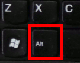Thus, the Alt key is a modifier key, used in a similar fashion to the Shift key. For example, simply pressing the A key will type the letter a, but if you hold down either Alt key while pressing A, the computer will perform an Alt+A function, the effect of which varies from program to program. You can also call it the Alternate key. The key is located either side of the Space bar.
- Android See Operating System.
- Apple Operating Systems (OS X, IOS) See Operating System.
- Archive File An archive file is a file that is composed of one or more computer files along with information about those files (metadata). Archive files are used to collect multiple data files together into a single file for easier portability and storage, or simply to compress files to use less storage space.
- ASCII is an abbreviation for American Standard Code for Information Interchange. ASCII was used to designate the set of characters available for creating text files in computers. Representing the characters (alphabet) of a language with ASCII characters is only suitable for English and some other European languages that do not require very many special characters. For other languages that require special or complex characters, a more flexible and complete standard is used called Unicode. See Unicode.
- AV or Anti-Virus is a program that is designed to watch and or scan for viruses, worms and Trojan Horses, and then clean, quarantine or delete infected files if it finds them. Linux systems like Linux Mint don't really need to run Anti-Virus all the time because viruses don't generally infect Linux computers like they do Windows computers. Linux Mint does have an Anti-Virus program called ClamTK (Menu > Accessories), which can be used to look for and clean Windows viruses from USB Drives or from files copied from Windows computers. See Virus.
- Background (desktop) is a design or a picture that can be set to display on the computer's desktop. The desktop background can be changed by using Menu > Preferences > Cinnamon Settings > Backgrounds. See Desktop.
- Backlight is the light that makes a computer's screen light up. It is called a backlight because the light appears to come from the back of the screen. The intensity of the backlight can be adjusted by pressing and holding down the Fn key (at lower left) while pressing the F8 or F9 function keys on the top row of keys. Each Fn+F8 key press decreases the backlight until it reaches a minimum amount of light; each Fn+F9 key press increases the backlight until it reaches a maximum amount of light. Reducing the backlight is one way to lengthen the time a laptop computer can run on a battery charge.
- Backslash (\) is a symbol that can be typed by using the key below the Backspace key. The backslash symbol is used to identify the markers used within the Unified Standard Format Markers (USFM) system of marking the parts of Scripture text. 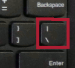The Adapt It and Paratext programs both use texts that have USFM codes to mark things in Scripture such as chapters (\c 1, \c2, \c3, etc), verses (\v 1, \v 2, \v 3, etc), section headings (\s), and many other things. See the document called usfmReference2_35.pdf for more information. You generally won't have to worry about USFM backslash markers when using Adapt It as long as the source texts used already have their USFM markings. Paratext also can display the USFM markings when displaying your Scriptures. Paratext also can create "empty" Scripture books which have all the chapter (\c ) and verse (\v ) markers already entered in the not-yet-translated Scripture book files. See USFM.
- Backspace is the keyboard key that moves the display cursor one position backwards, deletes the character at that position, and shifts back the text after that position by one position.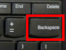 One way of "deleting text" is to position the display cursor immediately to the right of what you want to delete, and then use the Backspace key to delete characters backwards from the starting point until what you want to delete is removed from the text. See Delete (key).
- Back Translation is a special translation of your Scripture translation that you create in order to give to a translation consultant to study before he checks your translation. This back translation helps the translation consultant (who does not know your language) to understand more how your language works and how you've translated the words and phrases of the Scriptures into your language. When it is time for a consultant to check the translation, you or a person who knows your language and either Tok Pisin or English, will need to prepare a back translation written in Tok Pisin or English to give to the consultant ahead of a consultant session. The back translation must be prepared without referring to or looking at any other Bible. A special back translation project can be created in Adapt It and Paratext to help in the preparation of the back translation. See Translation.
- Backup is copying important computer documents and files to a different location - such as a USB Drive - for safe keeping. Then, if one or more of those important files is lost or undesirable changes are made to it, the backed up documents can be copied back to replace the lost or undesirable files with good copies. See also Restore (a file or folder).
- Battery and Battery Charge for Lenovo laptops running Linux Mint is displayed in the panel at the lower right part of the computer screen. The battery charge level can be displayed as a percentage or as time remaining until the battery power is exhausted. To change the display click on the battery display area and select Display and click on "Show percentage" or "Show time remaining". See Laptop.
- Binary is a number system in which there are only two possible values for each digit: 0 and 1. Binary is the "machine" language all computers understand. See Language (machine).
- BIOS basic input/output system is the program a personal computer's microprocessor uses to get the computer system started after you turn it on. It also manages data flow between the computer's operating system and attached devices such as the hard disk, video adapter, keyboard, mouse, and printer. The computer's BIOS settings can be viewed and/or changed by pressing the Enter key while the computer boots up showing the "Thinkpad" screen, then quickly pressing the F1 function key. Normally, you don't have to worry about the settings in the computer's BIOS. To exit the BIOS settings screen just press the Esc key, then select "Exit Discarding Changes" and press Enter.
- Boot or Booting Up (a computer) When you turn on a computer, the computer must first "boot" its operating system. This "boot" process involves some self checks to find out what hardware is present or hooked up to the computer. The boot process also makes a quick test of those hardware part especially the RAM memory and disk that stores the operating system, to ensure that the computer's hardware is working properly and the software to run the computer is present. Then, the computer loads its operating software from disk into the computer's memory, then finally, it turns over full control to that operating system software - and waits for you to Log In to the computer. Some computers have more than one operating system installed or available to the computer at boot time. In such cases, a boot menu may appear (called a Grub Menu) allowing the user to select which operating system to boot into. See Hardware. See Restart.
- Bug See Error and see Crash.
- Byte is a unit of data that is eight binary digits or "bits" long. A byte is the simplest unit that computers can use to represent a character such as a letter, number, or typographic symbol (for example, "a", "1", or "#"). See Language (machine).
- CapsLock (key) is located on the left side of the keyboard between the Tab key and the Shift key. The CapsLock key can be used to cause a string of characters typed to be all upper-case. 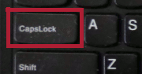The CapsLock key works like a toggle switch. Press it once to lock it into "all upper-case" mode. Click it again to release its lock and return to its normal mode. Normally to capitalize words you would use the SHIFT key instead of the CapsLock key. Use the CapsLock key only if you need to type many capital letters in a row. Then remember to press it a second time to turn it off for normal typing.
- Character is a letter (alphabet), or number, or other symbol that can be typed from the computer keyboard. A space is also a character even though you don't normally see the space on the screen. See also Unicode.
- Chat or IRC Chat is way to have a written conversation with someone located at a distance (even around the world). Your computer and the other person's computer must be connected to the Internet in order to use a Chat program. Linux Mint has the Skype program which can be used to chat with other people. If your computer is connected to the Internet, you can start Skype by selecting Menu > Internet > Skype. See Skype for more information.
- Chip or Integrated Circuit (computer) is group of miniature electronic components that are used in modern computers, cell phones, and other electronic devices. Computer chips are very small and compact - they can have billions of transistors (switches) and other electronic components in an area the size of a small fingernail. See Hardware (computer).
- CD or Compact Disk is a storage device. A CD can store about 700 Megabytes of text, music, videos, or other data. Many recently made laptop computers no longer have CD or DVD drives because it is old technology and much more data can be stored on USB drives today than on CDs. See Disk.
- Click (with mouse or trackpad) is one way to control a computer. The left button of a mouse or trackpad is the normal "click" button used to select things being pointed at on a computer screen. The right mouse button or trackpad button can be used to do a "right-click" operation on the thing being pointed at on the screen. The mouse wheel can also be used to scroll a list or window that has scroll bars. See also Mouse and Right-click (with mouse or trackpad).
- Close (window or program) In the title bar at the top right of most window frames you will see three little round buttons. The round button closest to the right corner of the window frame is the Close button. 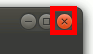It has an x inside the button. You can click on that button to close the window. If a program is running within the window you are closing, the program may ask you if you want to save your work before the window (and program) closes. See Quit.
- Collaboration Between Adapt It and Paratext Collaboration means sharing data together. Adapt It and Paratext can be set up to share data automatically which greatly simplifies working with both Adapt It and Paratext. An administrator sets up Adapt It and Paratext to collaborate together. During the set up for collaboration, Paratext is set up to have at least two Paratext Projects: a Source Language Project, and a Target Language Project. The Source Language Project will consist of the Scripture books (imported into Paratext) that will be used to translate from during the adaptation process. The Target Language Project in Paratext will consist mainly of the same Scripture books - but in the target language project, they are initially created as "empty" books within Paratext. As adaptation work proceeds inside Adapt It, this Paratext Target Language Project will automatically receive the adapted target text produced during adaptation work within Adapt It. The administrator sets up Adapt It to know what Paratext project is to be used for obtaining its source texts, and which Paratext project is to be used for storing its adapted target texts. A Project is established within Adapt It for this language pair. Once this collaboration is set up, Adapt It automatically handles all of the transfer of texts between Paratext and Adapt It, and between Adapt It and Paratext. Working entirely within Adapt It, the user selects the Scripture books and adapts them to target text within Adapt It and the Paratext project for receiving those target texts automatically grows until each target text is completely created (from within Adapt It). Once the adaptation process for a given book is complete, the user can switch to Paratext, open the target language project where he will find the adapted texts, and continue his work of editing and revising the adapted texts - now from within Paratext only. The collaboration setup process is described in detail in the Help_for_Administrators.htm document. This document can be displayed by making the Administrator menu visible from Adapt It (using the "Show Administrator Menu..." selection on the View menu) and then selecting the "Help for Administrators (HTML)" menu item on the Administrator menu. See Adapt It. See Paratext.
- Compress or Zip or Archive is a way of making a file smaller in order to take up less space on a computer's hard disk (or on a USB disk). A disk file which is compressed may have a .zip or a .gz file extension. Before a compressed or zipped file can be used, it needs to be uncompressed or unzipped. Usually the Linux system will know how to uncompress or unzip one of these files if you right-click on the file within the File Manager and select "Open with Archive Manager". See File Properties. See Zip. See Unzip.
- Compose Bar (in Adapt It) is an optional edit box that is normally hidden but can be made available by selecting "Compose Bar" on Adapt It's View menu. The Compose Bar is a handy place for you to type any text you might like to type, without having to worry about where the phrase box is. For example, you m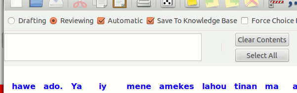ight be working on a complex adaptation for a whole sentence, and wish to work it all out before you enter it into the document. Click the View menu's Compose Bar command a second time and it will disappear (its contents will be retained though). Removing a retranslation also results in the retranslated text being copied to the Compose Bar, in case you want to retain it temporarily. Most people never use the Compose Bar, so unless you feel it will be important for your work, you can just forget about it and it will stay hidden.
- Computer is a machine that can be programmed to carry out math and logic operations. A computer generally has some kind of processor (CPU), memory for temporarily storing data and program instructions, and a way to get information and instructions in and out of the computer. Personal computers have only been available for purchase and use by ordinary people for about 30 years. The design and speed of computers changes very rapidly along with advances in technology. See Laptop. See Desktop. See Tablet. See Ultrabook.
- Configuration file (Adapt It) Adapt It stores most of the settings you use in two configuration files. There is a general configuration file, which has the filename AI-BasicConfiguration.aic. This file contains all the application-wide settings. It is updated every time you close the application. It is used to restore the application-wide settings every time you launch Adapt It. It is saved to the Adapt It Unicode Work folder. It is a plain text file. There is also a second configuration file – one for each project you have created. Each time you close a project, the project's configuration file is updated. The project configuration file has the name AI-ProjectConfiguration.aic. It stores the settings for settings which are unique to projects only. A few settings such as font settings are located in both configuration files. If the settings in the project configuration differ from the ones in the basic configuration, then the project settings take priority. Most computer settings have a default setting if you do not set them yourself. See Default.
- Consistent Changes (CC) Adapt It has the full-featured SIL consistent changes application incorporated within it. Adapt It allows you to specify from one to four consistent change tables, which will be used sequentially when Adapt It copies source text to make it the default target text - whenever an adaptation for the source text at the active location is not known. You do not have to use consistent changes when you use Adapt It, if you do not want to. This functionality is, however, very powerful and highly useful if you have a lot of known changes which are regular – especially orthography (alphabet) changes; it can save you lots of time manually typing adaptations.
- Consultant is a person who has good knowledge of translation, linguistics or literacy, and who can give advice about one or more of those topics. Scripture translation should be checked by a translation consultant before it is published and distributed widely to the language community. Most translation consultants require that someone on your team prepare a back translation in order to help the translation consultant understand more about your language and translation.
- Controls and Buttons (computer interface) are things that appear in a computer program or dialog that the user can click on to make a selection, provide information, or do an action. Examples of controls and buttons include: check boxes, radio buttons, lists, edit boxes, OK and Cancel buttons, and many others.
- Copy (file) You can copy a file using the File Manager, which can be launched by clicking the "Files" icon in the launch bar, or by selecting Menu > Places and clicking on one of the folders listed in Places. To copy a file go to the folder that has the file you want to copy. Click once on the file to select it. Then select Edit > Copy (or hold down the Ctrl key and press C). Then in File Manager go to the folder where you want the file copy to go, select that folder and select Edit > Paste (or hold down the Ctrl key and press V). A copy of the file should now appear in the folder.
- Copy (folder) You can copy a folder using the same commands that you use to copy a file. Launch the File Manager by clicking on the "Files" icon in the launch bar. Using the File Manager, go to the folder you want to copy and click on the folder to select it. Select Edit > Copy. Then in File Manager go to a folder that you want to place the copied folder in, and select that destination folder and select Edit > Paste. A copy of that folder (and all of its contents, which may be other folders and files) will be placed in that destination location.
- Copy (text) If you are working with text in a program like Adapt It, Paratext, LibreOffice Writer, or any other program, you can copy text from one location and paste a copy of that text to another location. Select the text you want to copy (see Selecting Text), then using the program's Edit menu, select Copy. Then place the cursor (insertion point) at the point is your document where you want the copied text to appear, and use the program's Edit menu and select Paste. The Ctrl+C short cut can be used to do the copy step, and the Ctrl+V short cut can be used to do the paste step.
- CPU Central Processing Unit (hardware) is the "brain" of a computer that contains its processor (also called microprocessor), memory and other important electronic parts that make up the computer. See Chip.
- Crash A crash happens when a computer program or the computer's operating system itself quits suddenly or hangs up and no longer responds to your commands at the keyboard or actions you take with the mouse pointer. Sometimes a crash means that the program itself has a "bug" and needs to be fixed or updated by the programmer(s) who created the program. Another reason that a computer program might crash is if a file that the computer program depends on gets corrupted or accidentally deleted or moved to an unexpected location. See Error.
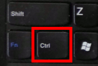- Ctrl (key) is located at the lower left part of the keyboard. The Ctrl key can be used along with other keys to give special commands or short cuts to the program that is running on the computer. For example, you can give the Ctrl+S command (by holding down the Ctrl key while pressing the S key, then releasing both keys) while creating a document in LibreOffice Writer. The command tells Writer to save your work immediately. The Ctrl+S command is simply a keyboard short cut for selecting the Save menu item on Writer's File menu. Another example of how the Ctrl key is used is to select some text in Writer, and give the Ctrl+B command. The selected text is made Bold by that command. The Ctrl+B command is simply a keyboard short cut for selecting the Bold icon on Writer's formatting tool bar. There are many other short cut commands that you can memorize to make your work go faster Many of the short cut commands are listed on a program's menus, and in the documentation files.
- Cursor is the arrow-shaped pointer that you can move around the screen by moving the mouse, or by sliding your finger across the trackpad, or by gently pushing the red "pointing stick" between the G, H, and B keys of the keyboard in different directions. Often you will want to move the cursor over a button or other control and then press the left-mouse button (or the left trackpad button) to activate that control. Often you will move the cursor over a text - in which case the cursor will change from an arrow shaped pointer to a pointer that looks like the capital letter I (called the I-beam cursor). You can then position the I-beam cursor between the letters of the text and click the left-mouse button (or left trackpad button), to place the flashing Insertion point in the text. You will do this commonly as you edit text. See Insertion Point. See Mouse. See Pointing Stick.
- Default is pre-set value or setting that the computer programmer felt would be the most common setting or value. Often you can change a default value or setting to something different if the different value or setting is more suitable for your needs. For example, the default colour for target text within Adapt It is blue, to distinguish it from source text whose default colour is black. These default colours can be changed to different colours if desired by selecting Edit > Preferences and selecting the appropriate "Set Custom Color..." buttons on the Fonts tab. See Configuration File.
- Delete is removing something such as a portion of text, a file, or a folder. To delete something you select it, then press the Delete key (or Delete from the application's Edit menu)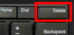. If you accidentally delete text or a file or folder you can usually get it back if you immediately click on the Undo Delete menu item in the Edit menu of the program you are working in. Generally deleted files that you delete within the File Manager are kept in a special folder called the Trash folder. If you deleted a file or folder some time ago and cannot get it back by selecting "Undo Delete" in the File Manager's Edit menu, you may be able to open the Trash folder, find the file or folder you deleted, select it, and click on the "Restore Selected Items" button in the Trash window. See Restore (a file or folder).
- Desktop (computer interface) is a technical term for the computer's elements (or interface) that it presents to the user. A computer's Desktop governs how the user interacts with the computer, how it arranges its menu and status bars, how programs are launched, and the appearance of its window frames, etc. There are many other Desktop systems available for Linux computers. Linux Mint is one such Desktop system. Windows and Mac computers also have their own style of Desktop.
- Desktop (hardware) is a type of computer system that has a CPU located in a cabinet, a separate monitor (screen), and a separate keyboard. Desktop computers are less portable and heavier than laptop, netbook, tablet, or ultrabook computers which have all of their computer components in a single small case. See Laptop. See Netbook. See Tablet. See Ultrabook.
- Desktop (icon) is a small picture located on the computer's desktop interface that represents a computer program. You can double-click the desktop icon to start up the program that it represents.
- Dialog is framed window of information and interface elements that appears when a computer program needs the user to make some decisions or give some information to the computer program. Dialogs usually have an OK button and sometimes a Cancel button. Dialogs are one of the main ways that the computer communicates or "dialogs" with the user. When a dialog appears, you often need to respond to that dialog before you can continue working in the program. See Window.
- Directory is another name for a folder in a computer's file system. See Folder.
- Disk is a storage device for storing data such as files and folders. One type of disk storage is a hard disk (or hard drive), which actually has spinning plates within the hard drive case, and information is stored in magnetic "tracks" around the spinning plates and written and read by a moving "head" that hovers above the spinning plates. Another type of "disk" is a USB Disk or Solid State Disk (SSD) that has no spinning parts, but stores its data in tiny memory chips instead of spinning magnetic plates. See USB. See USB Thumb Drive.
- DOC (file extension) used for formatted documents created by a word processor such as Microsoft Word or LibreOffice. See ODT.
- Double-click (with a mouse) is clicking the left mouse button (or left trackpad button) twice in quick succession. A double-click a short-cut way of selecting an item and having some effect on that item. For example, double clicking on a program icon on the desktop does two things: It selects that program icon and starts up the program associated with that icon. A double-click can also be done on a word of text in a word processor. When editing text, a double-click on a word highlights the whole word, and makes the word be in focus for the next action taken, such as deleting the whole word or typing a different word in its place. Some people have difficulty in doing a double-click, because to be a true double-click, the clicks must be done quickly with the left mouse button while holding the mouse still. If the mouse moves between the clicks, the attempted double-click will be understood as two single clicks in different places on the screen. See Click.
- DownArrow (key) is located at the lower right part of the keyboard with the image of a downward pointing arrow. This key is used to move scrolling windows down a line or two. When an insertion point has been placed within a text, this key is used to move that insertion point down one line.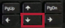 Within Adapt It, this key can be used in combination with the Alt and Ctrl keys to insert a placeholder in the Source Text line in order to make a place there (marked by ...) so that a target word or phrase can be entered under that placeholder. ALT+DownArrow causes a placeholder to be inserted BEFORE the first selected portion of source text. CTRL+DownArrow causes a placeholder to be inserted AFTER the last selected portion of source text (same as CTRL+I). See Alt (key). See Ctrl (key).
- Drag and Drop (with mouse) is an action you can do with the mouse, by selecting something and then holding the left mouse down on the selected thing while dragging the thing to a different place, or on top of a different thing. For example, Drag and Drop is one way to move selected text from one place in a text to another place within the text. Drag and Drop can also be used within the File Manager to move selected files and/or folders from one place to another place within the same file system (device). Drag and Drop takes understanding, skill and good mouse control to do accurately and effectively, especially when using it with files or folders. Therefore for inexperienced users, it is usually better to do a Copy and Paste operation or a Cut and Paste operation instead. It is important to realize that when one or more files or folders are selected, that a Drag and Drop operation MOVES them when done within the same file system, but a Drag and Drop done with selected files or folders does a COPY operation when done across different file systems (devices) such as between your computer and a USB thumb drive. See Mouse. See Select or Selection. See Copy (file). See Copy (text). See Move (file). See Move (text).
- Dropdown list is a user interface element that contains a list of possible values, with only a single default value showing initially. A small down arrow at the right end of the dropdown list can be clicked to cause the list of all possible choices to “drop down” and become visible. T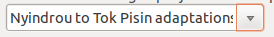he user can then select one of the possible choices, which causes the list to close and the selected item then becomes the value visible in the dropdown list.
- DVD is a storage device that looks like a CD disk, but can commonly store about 6 times more data than a CD disk. There are many types of DVDs, but the most common type stores 4.7 Gigabytes (4,700 Megabytes) of text, music, videos, or other data. Many recently made laptop computers no longer have CD or DVD drives because laptops and ultrabooks are getting thinner and thinner without room for a DVD drive in their cases, while USB drives can hold more data in a smaller space. See CD or Compact Disk.
- Edit The word Edit refers to the process of creating, changing or deleting some text within a computer program such as Adapt It, Paratext or LibreOffice Writer. As the user of the computer program you use the computer's keyboard and mouse pointer to do your text editing. See Keyboard. See Mouse.
- Editor is a computer program that is specially designed to edit text (see Edit). In Linux Mint the text editor is called gedit and is the editor that starts automatically if the user double-clicks on a plain text document within the File Manager (plain text documents don't have any special formatting and often have a .txt at the end of their file names). The gedit program can also be started by selecting Menu > Accessories > gedit. See Plain Text. See Gedit.
- Encrypted (file) and Encryption An encrypted file has been changed in such a way that only authorized people (who know how to decrypt the file) can read it. Encryption is the process of encoding messages (or information) in such a way that eavesdroppers or hackers cannot read it, but that authorized parties (who have the decryption key) can. See File Properties.
- End (key) is located on the top row of keys on the Lenovo keyboard near the right end of that row between the Home and Insert keys. W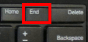hen editing text, the End key can be used to move the insertion point to the right "end" of a line of text. See Home (key).
- Enter (key) is an 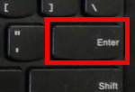important key that is used in nearly all computer programs. Within Editor programs (including Paratext) the Enter key is used to start a new text line or paragraph while editing. Within Adapt It the Enter key is used within the phrase box to tell Adapt It to move on to "Enter" the translation into the Knowledge Base, and move the phrase box the next source word (or "hole") while adapting. Sometimes, within a dialog, pressing the Enter key will act like pressing a pre-selected button, such as the OK button. See Phrase box.
- Error is a condition in which you or the computer is attempting to do something that it cannot do successfully. Usually the computer or the program will give you a message about the error. Hopefully the error message will help you to avoid the error condition if the error is the result of some action you are trying to do. On rare occasions a program may suddenly stop or quit which is usually the result of a program "bug" or defect. If that kind of error happens it is not your fault, but such "bugs" are the result of faulty logic or conditions that the programmer did not anticipate. If you encounter a program error or bug in a program such as Adapt It or Paratext you can talk to your advisor or, if you have Internet access and can still run the program, you can choose the "Report a Problem" menu item on the program's Help menu, fill in as much information you can in the report dialog, and send it to the program's programmers over the Internet. See Crash and see Message. See Warning.
-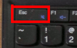 Esc (key) is a key located at the upper left corner of the computer's keyboard. The Esc key is a short cut in dialog boxes for No, Quit, Exit, Cancel, or Abort, as well as a common short cut key for the Stop button in many web browsers. Pressing the Esc key will usually close a menu list if it remains open and you do not want to select any menu item on the list. Within Adapt It, the Esc key can be used to tell the Phrase box to just display a copy of the source text rather than any guess made by the Guesser.
- Execute or Executable To Execute a program is the same as to "launch" or "start up" a program. An Executable is the actual disk file that contains the program itself that is normally invoked by selecting a Menu command, or by clicking on the program's launch bar icon, or by double-clicking on the program's desktop icon. Most programs can be invoked from a Menu command. Only a few commonly used programs can be invoked via the launch bar or via a desktop icon. See Menubar, Launch Bar and Desktop (icon).
- Exit is a menu item on the File menu that can be used to quit or end the running of a program such as Adapt It, Paratext, or LibreOffice Writer.
- Export is a way to get data out of a program, in a form that is designed to be imported (opened) for use within another program. For example, Adapt It has an Export-Import menu in its menu bar that lists 6 kinds of exports, one of which is Export Translation Text. The Export Translation Text (with the RTF button selected) can be used to produce a nicely formatted (RTF) document that can be opened within LibreOffice Writer and printed for village testing. Note: You do not have to export adapted translation text from Adapt It in order to get it into Paratext. This can be done automatically when an administrator sets up collaboration between Adapt It and Paratext. See Collaboration Between Adapt It and Paratext. Other types of exports from Adapt It include: Export Source Text, Export Interlinear Text, Export Glosses as Text, Export Free Translations, and Export Knowledge Base. See also Import.
- Ext2, Ext3, Ext4 Extended file systems commonly used on Linux computers. See File System.
- Extension / File Extension / File Type can be indicated for a file by ending the filename with a dot plus an "extension" which is an abbreviation that indicates the type of content in the file. For example, a plain text file called ReadMe might have the .txt extension making the whole name of the file become ReadMe.txt. A picture taken from a camera might have the name WorkshopParticipants and the extension .jpg so that the whole file name is WorkshopParticipants.jpg. A document created by LibreOffice Writer (with formatting) might be called MyFamilyHistory and the extension .odt so that the whole file name in this case is MyFamilyHistory.odt. The file extension of this HTML document you are now reading is .html and the program you are viewing this document in is Firefox. See HTML. See Firefox.
- F1 F2 F3 F4 F5 F6 F7 F8 F9 F10 F11 F12 (function) keys The function keys are located along the top row of keys on the keyboard and each key has the letter F plus a number from 1 to 12. Each function key can have different meanings in different programs.
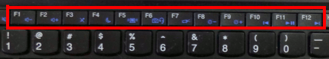
The
function keys also have different meanings when used together with
the Fn key at the lower left corner of the keyboard. Those different
meanings are symbolized by the small pictures on the lower part of
some function keys. See Fn (key).
- FAT, FAT32 (File Allocation Table) is a file system commonly used on older Windows computers and on USB drives. See File System.
- File or Disk File is logical arrangement of data contained in a single unit within a computer's file system. A computer file in a computer's file system is like a book in a library. Computer files can contain text, images, computer programs and other types of data. Each file must have a name and other information that defines the characteristics of the file such as the size of the file, the date the file was created, the date it was last modified, who can access the file and whether it can be read or written to (permissions). Some files can be handled by a user and other kinds of files should not be handled by computer users. All Files have File Properties. See File Browser or File Manager. See File System. See Disk.
- File Browser or File Manager is program that can assist a computer user by displaying where files are located and how those files are organized. The File Browser or File Manager can be launched by clicking on the "Files" icon in the launch bar or on the "Files" icon in the Favorites list of the main Menu. This program can be used to view the contents of folders and devices such as a USB drive. It can also be used (with care) to rename, move, copy or delete files and whole folders. Beware: Some files and folders should not be renamed using the File Browser/Manager. These include the "Adapt It Unicode Work" and the "ParatextProjects" folders along with most of the files contained with those folders. Renaming or deleting a file that is needed by another program may cause that program to fail to run properly or "crash". Files that can be renamed, moved, or deleted include document files that you create using the LibreOffice Writer program. Make sure you save any documents and Exit from the LibreOffice Writer program before you attempt to move or delete files that you created or edited during your current computer session.
- File properties are aspects of a file or directory such as whether the file or directory is read only, hidden, encrypted or compressed.
- File system is the way in which files are named and where they are placed logically for storage and retrieval. Computers running the Microsoft Windows operating system commonly use the NTFS, FAT32 or FAT file systems. The Windows operating system does not recognize other file systems. Linux, however, knows how to use its own file system (Ext2, Ext3, Ext4) AND can also recognize and use the FAT, FAT32 and NTFS Windows file systems. This means a Linux computer system can read and write files on a Windows system as well as its own system files. See Operating System.
- Firefox is a popular web browser that can be used to view web pages and HTML documents of various kinds located on the Internet and on your computer.
- Firewall is a is a piece of hardware or a software program that protects the information on your network from users of other networks. The firewall is a security system that controls the incoming and outgoing network traffic, and determines which traffic should be allowed through or not, based on a set of rules and safeguards.
- Fn (key) is located at the lower left corner of the keyboard. The Fn key can be used together with some of the function keys located on the top row of keys on t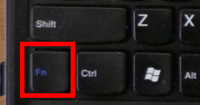he keyboard. For example, you can hold down the Fn key while pressing the F8 key (Fn+F8) to lower the intensity of the backlight of the Lenovo's screen, or Fn+F9 to raise the intensity of the backlight again to its brightest setting. The light gray symbols on the function keys on the top row of the keyboard give some indication of what those keys do when pressed while the Fn key is being held down. Some Fn key combinations only work when a certain program is running (that makes use of them), or a video projector is hooked up to the computer, and some may only work if your computer was running Microsoft Windows instead of Linux Mint. See Function Keys.
- Focus or Control Focus is one way that the computer understands what you want to do while using the computer. The focus is especially important when more than one program or window is open at the same time on the computer screen. When more than one program or window is open, the program or window that is in "focus" is the one that will respond to your key presses or your clicks of the mouse or trackpad buttons. If more than one program or window is open, the window that is in focus will normally be in front of any other overlapping windows, and title bar of the focused window will be brighter than the title bar of windows which are not in focus. Within dialogs, items such as edit boxes, dropdown lists, buttons, check boxes and radio buttons that are in focus will have a highlight or selection colour and/or be outlined with a dashed line. To change the focus of windows, you can use the mouse pointer to click in a different window. You can also use the mouse pointer to move the focus to different items within a dialog. Within dialogs it is also possible to move the focus to different items by using the Tab key.
- Folder is a named location in the file system that can contain other folders and/or files. Folders are shown within the computer as icons that look like a physical manila folder that might be stored in a physical "file cabinet". A folder can contain other folders, which in turn contain other folders and so on. Another name for folder is a "directory". See File System.
- Folklore. See Hoax Emails.
- Format or Formatted (device or disk partition) A computer's file storage devices are formatted with a file system that acts as a map to organize and keep track of the disk information stored there. It is possible for a computer user to format a device such as a USB drive, or a disk partition, but usually that is not needed unless the device or disk partition becomes corrupted and must be cleared of all of its data (folders and files) to enable it to store fresh data. Formatting a device or disk partition recreates its internal map and destroys all data that was present on that device or partition. For this reason, normal computer users should not attempt to format such devices.
- Format or Formatted (document) is a document made up of text that has been enhanced to make the document have a more published-like structure and appearance as you might find in a book or magazine. Formatting a document gives it those enhancements. Formatted documents may have things like bold or italic words or phrases, different size or kinds of fonts, special kinds of paragraph indentation or spacing, borders, shading, embedded pictures, and many other kinds of formatting. Formatted documents are usually created within word processor programs such as LibreOffice Writer or Microsoft Word. Files that have a .doc or .odt or .rtf extension are usually formatted documents. See Extension / File Extension / File Type.
- Frame is a rectangular border of a window appearing on the computer screen. The frame and window usually contain a running program, or a dialog displayed by the program. Frames have a title bar which has buttons that can be used to maximize the frame (and its window) to take up all of the desktop area, a button to minimize the frame down to the task bar or restore the frame to its original position, and a button to close the frame and window entirely.
- Free software is software that is released under a free license such as the GPL (General Public License) or LGPL (Lesser General Public License). Free software licenses such as these are designed to increase its users freedom rather than reduce it. The idea behind free software is that its users should have some basic rights including the rights to change, modify, copy, and give free software to others. Therefore, when we speak of free software, we are referring to "freedom" as much as we are speaking about its price. Examples of "free" software are the Linux operating system, and programs such as LibreOffice ("Libre" is the French word for "freedom" or "liberty"). The opposite of free software is un-free software, also called proprietary software, where the license takes away all of the freedoms that the free GPL provides. Classic examples of un-free software are Microsoft Windows and Apple Computer's OS X operating systems.
- Gedit is the Linux plain text editor. See Editor. See Plain Text.
- GHz or Gigahertz is a frequency expression equal to one thousand million hertz (1,000,000,000 Hz). The term Gigahertz is used in computers to express microprocessor clock speed. One Gigahertz is just over 1000 Megahertz.
- Gigabyte is two to the 30th power, or 1,073,741,824 bytes in decimal notation. One Gigabyte is just over 1000 Megabytes.
- Gimp is a graphics or picture editor and creator. The Gimp program is found at Menu > Graphics > Gimp Image Editor.
- Gnome (GNU Network Object Model Environment, pronounced gah-NOHM) is a graphical desktop for users of Linux machines. See Linux Mint.
- Google is a large multi-national organization that has specialized in in Internet-related services and products. These include search, cloud computing, software and online advertising technologies. Google's mission statement is "to organize the world's information and make it universally accessible and useful". See Yahoo!.
- Graphical User Interface or GUI usually pronounced GOO-ee, is a method of interacting with the computer using images and other visual controls rather than by means of text commands. Each part of a computer's graphical user interface is usually just a type of window, displaying some information or item to the user. Linux Mint uses a GUI that is somewhat similar to the GUI used on Windows computers. See Window.
- Group (permissions) Linux operating systems allow certain permissions to be granted to the "owner", to the "group", and to "others" with respect to the files and folders in the computer. The group is distinct and has certain permissions that are distinct from the owner and from the others. See User (Permissions).
- Grub is a small software program that functions as a "boot loader". It is the first software program that runs when a computer starts. It is responsible for loading and transferring control to the operating system kernel software. The kernel then starts the rest of the operating system.
- Guess or Guesser is a feature of Adapt It that analyzes the source text words and phrases and how the user has previously associated them with the target text adaptations as found in the Adapt It project's knowledge base. While the user works adapting text the guesser makes guesses about the possible form of adaptations that it thinks can possibly be associated with source text words and phrases that have not yet been adapted. When the guesser makes its guess it puts it into the phrase box and makes the background colour of the phrase box turn orange to signal to the user that its contents are a guess made by the guesser function. If the guess is not a good adaptation at that point, the user can press the Esc key which will remove the guess and allow the source text to be copied into the phrase box as usual.
- Hard Disk or Hard Drive is a storage device that uses a spinning platter with a magnetic surface that stores digital data. The data is written and read from the platter's surface by means of one or more moving "heads" that can seek out the data locations as the platter spins at several thousand revolutions per minute. An hard disk retains its data even when the hard disk is powered off. The Lenovo x130e and x131e laptop computers have a hard disk that can store 320 Gigabytes of data and transfer data to and from the hard disk at the rate of between 10 and 30 megabytes of data per second.
- Hardware (computer) is the collection of physical machines and devices that make up a computer system. Hardware is basically useless without some software to make the hardware useful as a tool for doing work. See Software.
- Hertz A hertz is a measure of frequency in an electronic device. One hertz is one cycle per second. See Megahertz. See Gigahertz.
- Hidden (file property) All file and folder names in Linux file systems that begin with a dot (full stop) have the hidden property. Hidden files are not normally displayed in the File Manager, unless the user asks specifically to be able to see hidden files (the "Show Hidden Files" menu item is ticked in the View menu of the File Manager). Hiding files from view is a way of protecting them from accidental changes or from being moved from their normal location by casual computer users. See File Properties.
- Hoax Emails Email and the Internet are wonderful places to share information. There are, however, many sources of false and misleading information that get shared via email and posted on the Internet. Email and the Internet make it easy for people to find false and misleading information and pass it on to others. Unfortunately, there are a great many stories and claims passed around that may appear to be true, but that are not true, or that are only partly true. They are hoaxes. Being a "false witness" is a sin in God's sight, regardless of whether it happens personally or by spreading falsehoods on the Internet of via email. If you have Internet access there are some good sites that can help you understand what is true and what is not. Good sites with helpful information are www.snopes.com and www.vmyths.com/hmul/. It is best to just delete emails that are hoaxes. Do not forward them to others on your email list! If you forward such email you only contribute to the problem of hoax emails and risk being a false witness.
- Hole (Adapt It). A hole is an untranslated location in the Target Text. A hole is left in the target text when you press the Enter key with nothing in the phrase box, or if you move the phrase box by clicking to another location in the target text before entering any adaptation in the phrase box. When Adapt It is in Drafting mode, and you press Enter in the phrase box, the phrase box will jump to the next location in the target text where a hole is located. See Phrase box.
- Home (folder) is the main folder that belongs to the computer user. When a computer has more than one user (with their own user name and password), each user has their own Home folder which is separate and cannot be seen by other users on the same computer. Your Home folder contains other folders including folders called Documents, ParatextProjects, Adapt It Unicode Work, Music, Pictures, Videos and Downloads. When you click on the "Files" folder icon in the launch bar, the File Browser (or File Manager) opens showing the folders and files that are contained in your own Home folder.
- Home (key) is located on the top row of keys on the Lenovo keyboard near the right end of that row between the F12 and End keys. T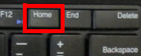he Home key can be used to move the insertion point to the left "end" (beginning) of a line of text when editing the text.
- HTML is an abbreviation for Hyper Text Markup Language. HTML is the main markup language for creating web pages and other information that can be displayed in a web browser such as Firefox.
- Hyperlink or Jump Link is a reference to data that is located in another place - either within the same file, a different file on the user's computer, or in a file somewhere else, such as on the world wide web. By clicking on (or activating) the link, the user can follow that link and access or view the data at the link's actual location. Hyperlinks are usually underlined (or become underlined when hovering the mouse pointer over them). This document has many hyperlinks that you can click on to jump to topics and related glossary references in other parts of this document. When viewing a document such as this one, after you click on a hyperlink and have jumped to a new location, you can jump back to the original location by clicking on the browser's "Go Back" button. See Web site, Web, World Wide Web (www).
- Hz or Hertz is a unit of frequency expressed in cycles per second. Mains power in Papua New Guinea is alternating at 50 hertz or 50 cycles per second. In America and some other countries the mains power frequency is 60 hertz, or 60 cycles per second. Computers operate at very high speed. The CPU of a modern computer is usually operating in the gigahertz range. See Megahertz.
- Icon (computer) is a small symbol or picture displayed on a computer screen and used as a symbol representing something else. Icons are also used to navigate a computer system or mobile device. The icon itself serves as a quick, "intuitive" representation of a software tool, function or a data file accessible on the system. It functions as an electronic hyperlink or file short cut to access the program or data. Computer icons, in conjunction with computer windows, menus and a pointing device, form the graphical user interface (GUI) of the computer system, and enable the user to easily and intuitively navigate the system. See Window and Mouse.
- IMAP Internet Message Access Protocol is a standard protocol for accessing email from your local email service provider. With IMAP email is received and held for you by your Internet service provider. With IMAP, your email is not on your computer, your just reading it from your computer.
- Import is a way to get data into a program for use within that program. The data that is imported generally has been exported by a different program in a form that is designed to be imported (opened) for use within another program. For example, Adapt It has an Export-Import menu in its menu bar that lists 2 kinds of imports: Import to Knowledge Base, and Import Edited Source Text. Note: You do not have to manually export source text from Paratext in order to import it into Adapt It. This can be done automatically when an administrator sets up collaboration between Adapt It and Paratext. See Collaboration Between Adapt It and Paratext. See also Export.
- Insertion Point is the location within a text document where text will be edited using the keyboard and other editing commands. To set an insertion point, you move the mouse pointer over a text or within an edit box 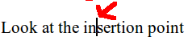- in which case the cursor will change from an arrow shaped pointer to a pointer that looks like the capital letter I (called the I-beam cursor). You can then position the I-beam cursor between the letters of the text (or within the edit box) and click the left-mouse button (or left trackpad button), to place the flashing Insertion point in the text. You will often set an insertion point in order to edit text within Paratext, Adapt It, or LibreOffice Writer.
- Insert (key) On some Lenovo keyboards there is no Insert key. Normally, within an editor program if you place the insertion point within some text, and you begin typing more text, the typed characters are "inserted" into the existing text - pushing any existing text to the right as you type the new characters. On keyboards that have the Insert key, it can be used as a toggle to turn this "insert" behavior OFF. When Insert is OFF, the insertion point looks like a black flashing rectangle, and every letter you type will replace (rub out) the next character in the existing text. To turn Insert mode back on just press the Insert key again.
- Install (a program or software) is to add a software program to your computer. Linux Mint comes with many software programs which are already installed on the computer, and are available from the main Menu. Probably most software that you will ever need is already on your Linux Mint system. There are thousands of other free software programs that available and can be found in software "repositories" on the Internet. Linux Mint has a program called "Ubuntu Software Center" which can be launched at Menu > Preferences > Ubuntu Software Center. The Ubuntu Software Center knows the location of over 63,000 free software programs designed especially for Linux computers. If you have Internet access you can view lists of many of those software programs that are available for free download. For example, suppose you are interested in Astronomy. Within the Ubuntu Software Center you can click on the category "Science and Engineering" and then click on the category "Astronomy". There you will find a dozen free programs having to do with Astronomy. One of the better programs is called "Stellarium". If you have Internet access this program can be downloaded and installed. Note: Some programs like Stellarium are large programs. Stellarium is about 36 Megabytes, so it may take a while to download and, although the Linux software itself is free, downloading it may cost you connection time and data charges from your Internet provider.
- Interface (computer) See Graphical User Interface or GUI.
- Internet is is a global system of interconnected computer networks that serve billions of users worldwide. It is a network of networks that consists of millions of private, public, academic, business, and government networks. The Internet carries an extensive range of information resources and services, such as the inter-linked documents of the World Wide Web (www) and the systems that support email. The public Internet has only existed as we know it today since about 1990.
- IP or IP Address IP stands for Internet Protocol which is the method or protocol by which data is sent from one computer to another on the Internet. Each computer (known as a host) on the Internet has at least one IP address that uniquely identifies it from all other computers on the Internet. When you send or receive data (for example, an email note or a Web page), the message gets divided into little chunks called packets. Each of these packets contains both the sender's Internet address and the receiver's address. The packets travel rapidly over the Internet from one part of the world to another part of the world to reach their destination. Each packet making up the data can travel around the world via different routes, but they all get reassembled together when they reach their destination - usually within a second or two, but sometimes only a fraction of a second.
- IRC is a short name for Internet relay chat. IRC is an older system of chatting online using the Internet.
- ISO 639 code is a two or three letter code that has been assigned to every known language of the world. For example, English has the code en or eng. Manus Province in PNG has about 29 language groups. Here are the iso-639 codes for some of those languages: Nyindrou (LID), Harengan (SBH), Kurti (KTM), Ede (TWP), Khehek (TLX), Bipi (BIQ), Levei (TLX - same as Khenek), Sori (SBH - same as Harengan), Likum (LIB), Titan (TTV), Nali (NSS), Lele (LLE), Pak (PKG), Tok Pisin (TPI). Some languages that linguists currently think are dialects of the same language share the same code (the code for Sori-Harengan is SBH; the code for Levei and Khehek is TLX). A list of all the know languages and their language codes can be viewed within Adapt It and Paratext.
- ISP Internet Service Provider, a company typically providing Internet access and/or Internet services such as email or data services.
- JPG or JPEG (file extension) is a type of compressed image or picture file. The degree of compression of a .jpg file can be adjusted, allowing a selectable tradeoff between file storage size and image quality. JPEG typically achieves 10:1 compression with little perceptible loss in image quality but great savings in disk space. See Extension.
- Jump Link See Hyperlink.
- Kernel is the center of a computer operating system. The kernel is the core that provides basic services for all other parts of the operating system. The Linux Kernel is maintained and continually improved by thousands of volunteers, and led by a Finnish man named Linus Torvalds who first invented the Linux kernel in 1991. See Linux. See Unix.
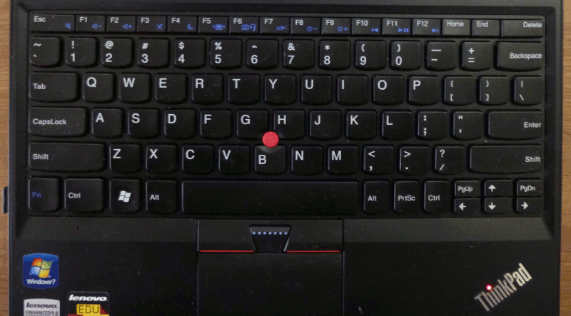- Keyboard is a device for typing information into a computer. Most keyboards are patterned to resemble the keyboard of an old typewriter. A laptop computer has a built-in keyboard. Desktop computers usually have a separate keyboard. Tablet computers and smart phones usually have a virtual keyboard that appears on the screen where users can touch the keys to type information into the computer.
- Kilobyte is approximately a thousand bytes (actually, 2 to the 10th power, or decimal 1,024 bytes). See Byte. See Megabyte. See Gigabyte.
- Knowledge Base (Adapt It) is type of data storage that keeps track of how you translate words and phrases from the source text to the target text. The knowledge base (KB) stores your translations in RAM memory while you are working in Adapt It. When your adaptation work is saved Adapt It saves your work as adapted documents and also saves your translations in a separate knowledge base file. You can view and/or edit the content of the Knowledge Base by selecting Tools > Knowledge Base Editor... which opens the KB edit dialog.
- LAN (Local Area Network) is a computer network that interconnects computers in a limited area such as a home, school, computer laboratory, or office building. The computers on a LAN can be connected using a network wire/cable, or by using wireless signals from a wireless access point. When computers are connected on a LAN they can easily share files and printers.
- Language (human) is a complex system of communication done between people. The study of human language is called linguistics. See Linguistics.
- Language (machine) is a basic system of electronic signals or instructions that are used to operate and control a computer. Essentially a computer's machine language is composed of zeros and ones (binary code).
- Language (programming) is used by programmers to create computer programs. There are many kinds of programming languages, but all of them are designed to create source code (see Source Code) that can be read by humans. Before a program's source code can be used by a computer, it must be converted to the computer's machine language and saved in an executable file (see Executable).
- Laptop (hardware) is a computer that is compact and portable, powered by a rechargeable battery. A laptop has a built-in screen, keyboard and internal storage.
- Launch Bar is located near the left end of the Linux Mint's panel at the bottom of the computer screen.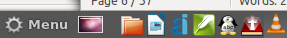 The launch bar contains icons representing commonly used programs. Programs on the launch bar can be started by a single click on the icon representing that program.
- LeftArrow (key) is located near the lower right part of the keyboard. It can be used to move the insertion point to the left while editing text in a text window or a multi-line edit box. T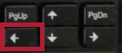he LeftArrow key can also be used along with the Alt key within Adapt It. Alt+LeftArrow can be used to select source text words above and to the left of the phrase box in order to make a phrase with those source text words. See RightArrow.
- License (software) A software license s a legal contract that restricts the use or redistribution of software. A typical software license for Windows software is very restrictive. Most Windows software licenses are highly restrictive and grant an end-user permission to use one or more copies of the software on a single computer. Making more copies or installing the software on more than one computer, or giving the software away to others constitutes copyright infringement of the software owner's exclusive rights under copyright law. An open source software license is different. It guarantees that a user has the freedom to copy and distribute the software free of charge and for the benefit of others. Nearly all Linux software is not restrictive, but uses an open source type of license to protect the freedoms of users.
- Linguistics is the scientific study of human language. Linguists study the sound system of a language which can help in the development of an orthography (alphabet). They also study the structure of the language (grammar), and how meaning is represented by the language (semantics). SIL and PBT are organizations that focus on the study of languages in order to facilitate and improve translation work, especially the translation of the Bible.
- Link See Hyperlink.
- Linus Torvalds is the creator
of the
Linux kernel,
was born in Helsinki, Finland, on December 28, 1969.
- Linux Linux was originally developed as a free operating system for personal computers. Linux works on more computer hardware platforms than any other operating system. Linux is a leading operating system on servers, mainframe computers and supercomputers. More than 90% of today's 500 fastest supercomputers run some kind of Linux, including the 10 fastest computers in the world. Linux also runs on devices where the operating system is typically built into the device such as mobile phones, tablet computers, network routers, building automation controls, televisions and video game consoles. The Android system in wide use on smart phones and mobile devices is also built on the Linux kernel. See Kernel. See Linus Torvalds. See Unix.
- Linux Mint is one of many different Linux graphical desktops that run on top of the Linux Kernel. Linux Mint uses many resources of the Ubuntu graphical desktop, but Linux Mint looks and feels more like Microsoft Windows than the modern Ubuntu desktop.
- List is a box or window in a computer interface that contains a number of different but usually related items. Some dialogs have lists from which the user can select one or more items.
- LOG (file type) used for log files. Log files contain a ongoing log of events of a program or a user's actions. Some logs have a .log file extension, others may have a .txt file extension.
- Log In is the process of activating the computer for use by an individual user. When a computer is started that uses the Linux Mint system, the computer shows the Log In screen with a list of current users. The user selects the appropriate user name (if more than one user is shown) and enters the password for that user. If the password entered is correct the computer loads the desktop, the Home folder and other interface elements for that user. Every time the computer is started you must Log In to use the computer. See Log Out.
- Log Out is the process of leaving a user's desktop and Home space, and going back to the Log In screen. You would not normally need to Log Out, unless more than one user is set up on the same computer, and a different user wants to Log In after the first user has logged in. To change users, the current user must Log Out, so that the new user can Log In with his own user name and password. See Log In.
-
Make a Phrase (Adapt It) is a common action that is done
during the work of adapting
text within Adapt
It. To make a phrase, the user first selects
two or more source text words using the keyboard
or the mouse (so that the source words
are highlighted in yellow), then clicks on the "Make a Phrase"
button on the Adapt It Tool Bar. If the phrase box
was not located under the newly made phrase, it will automatically
move to the target text
line under that newly made phrase. There is also a short-cut way to
make a phrase within Adapt It. If you want to make a phrase at the
current location of the phrase box, you can use the Alt+RightArrow or
Alt+LeftArrow keys to select source text words to the right or left
of the phrase box location, then, with source text words selected (in
yellow) simply start typing the translation
of those selected source text words. Adapt It automatically makes a
phrase of the selected source text words when you start typing in the
phrase box. In this case you do not need to click on the Make a
Phrase button in the tool bar. When you have finished typing the
translation in the phrase box press the Enter
key to move the phrase box to the next location (called a "hole"
in the text).
If the phrase box
was not located under the newly made phrase, it will automatically
move to the target text
line under that newly made phrase. There is also a short-cut way to
make a phrase within Adapt It. If you want to make a phrase at the
current location of the phrase box, you can use the Alt+RightArrow or
Alt+LeftArrow keys to select source text words to the right or left
of the phrase box location, then, with source text words selected (in
yellow) simply start typing the translation
of those selected source text words. Adapt It automatically makes a
phrase of the selected source text words when you start typing in the
phrase box. In this case you do not need to click on the Make a
Phrase button in the tool bar. When you have finished typing the
translation in the phrase box press the Enter
key to move the phrase box to the next location (called a "hole"
in the text).
- Malware is software designed by attackers (or "hackers") to do harm to your computer or your ability to use your computer. Malware can disrupt computer operations, gather sensitive information, or gain access to private computer systems. Malware includes computer viruses, ransomware, worms, trojan horses, rootkits, keyloggers, dialers, spyware or adware, and other malicious programs. The majority of active malware threats today are usually worms or trojans rather than viruses. Fortunately, Linux has been designed to be a very secure computer system, and so there are very few kinds of malware or viruses that can "infect" a computer that is running Linux. Even so it is wise to have good backup practices and to avoid accessing dangerous web sites where malware is often present. See also Hoax Emails.
- Maximize (a window) is to make the window expand to fill the whole desktop or computer screen. The middle round button at the right end of the window's title bar is used to maximize the window, and to restore a maximized window to its previous size.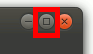 When a window is maximized, other open windows cannot be seen directly because they will be located underneath and covered by the maximized window. The lower windows may be hidden, but they can normally be brought to the front for viewing by clicking on the panel's button that represents that hidden window. See Restore (a window).
- Media or Multimedia (electronic) are words that describe electronic content including video recordings, audio recordings, pictures, multimedia presentations, slide presentations, CD/DVD and online content. Linux Mint includes software programs (VLC media player, Gnome MPlayer, Firefox, LibreOffice Impress, Brasero, Sound Recorder, Cheese, etc) that can create, display, or play all these types of electronic media.
- Megabyte is 2 to the 20th power or 1,048,576 bytes bytes of data. It takes about a 1,000 megabytes to make a gigabyte. See Kilobyte.
- Memory or RAM Memory is a form of temporary computer data storage. The name RAM means "Random Access Memory". It is very fast memory that is used during the time your computer is supplying power to its central processing unit. Most Lenovo laptops have 4 or 6 Gigabytes of RAM memory. RAM memory is normally lost when the computer is powered down, so any important data that has been created within your computer's temporary RAM memory should be saved to a hard disk or USB drive before shutting down the computer. Most computer programs like Adapt It, Paratext and LibreOffice Writer keep track of whether you have created or made changes to your data, and they will usually ask you if you want to save your data before the program closes. Even so, you should make it a habit to save your data often while you are working on a computer.
- Menu (in task bar) is located at the left end of the task bar or panel located at the bottom of the computer screen. Most of the computer programs that are available in Linux Mint are organized into groups of menus that you access by starting with a mouse click on the main Menu. Keep your mouse still after clicking on the word Menu, since it may take a few seconds for the main Menu to appear. A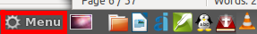nother way to invoke the main Menu is to press and release the "Menu" key that is located between the left Ctrl and Alt keys at the lower left part of the keyboard (it has a picture of a 4-pane "window" on the key). Once the main menu appears, it shows at least three columns of menu icons or menu categories. The left column are icons which are called "favorites". These include the red coloured "Quit" icon at the bottom of the column which is used to shut down the computer. You can hover the mouse pointer over the menu icons and see a description of the menu icon at the bottom (and bottom right) of the main menu. The middle column lists the menu groups or menu categories. You can click on one of these menu group names, and the list of icons representing the menu items for that group will appear in the third or right column of the main menu. As you hover the mouse pointer over each menu group (in the middle column) the list of individual menu icons in the right column changes - showing the icons contained in that group. If you see the icon for a program you want to start up in the right column of the main menu, you will find it helpful to first click on the group name in the middle column to tell the computer that you are interested in selecting a program icon belonging to that group (in the right column). The computer will then make it easier for you to move your mouse over to the right column and select one of the icons of that group. You may need to practice this technique so that you can accurately navigate through the Linux Mint Menu system with your mouse, trackpad or pointing stick. In this Glossary, we indicate a series of menu commands by separating them with a > character. For example, the Calculator program can be started up by clicking once on each of these menu items in the order given: Menu > Accessories > Calculator. See Menu Bar.
- Menu Bar A program's menu bar contains a list of menu names such as File Edit View, etc. Menu bars are part of individual computer programs such as Adapt It, Paratext or LibreOffice Writer. The menu bar is located at the top of the program's window frame just under the frame's Title bar. You "open" the menu by clicking once on the name of the menu in the menu bar causing the menu's sublist of items to open, allowing you to select one of those items. In some programs, there are some menu items that have additional (third-level) sublists. If an item in the menu's sublist has a small right arrow at the right side of that menu item, an additional third-level list of menu items will appear to the right of the first list when you hover the mouse pointer over the menu item. In such cases, if you want to select an item from that third-level list, you must be careful to move the mouse pointer directly to the right over that little arrow in order to be able to click on a third-level list item, and avoid accidentally closing that additional list. Adapt It does not have third-level menu lists, but some other programs like Paratext and LibreOffice Writer do.
- Menu (key) is a ke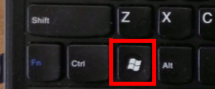yboard key that can be used (instead of clicking the mouse pointer on "Menu" in the panel) to invoke the main Menu of the Linux Mint system. This menu key is located between the left Ctrl and Alt keys at the lower left part of the keyboard. It has a picture of a 4-pane "window" on the key. On Windows computers, this same key is called the "Windows Key" and is used to invoke the Windows "Start" button. On Linux Mint we call this key the "Menu Key".
- Message The Linux Mint system and most computer programs use a "message" dialog to communicate with you the user. The message is telling you something you should know. Messages may be only for information purposes, or they may give you a warning or tell about an error. Messages usually have an OK button which you should click on after you have read the message. See Error. See Warning.
- MHz or Megahertz is a frequency expression in millions of cycles per second and is used as a unit of measure for the "clock speed" of computer microprocessors. One MHz is just over 1000 (1024) Hertz. See GHz or Gigahertz.
- Microsoft Windows See Operating System.
- Minimize (a window) is making a window on the computer screen shrink down so that it appears to be closed, but is still present as an button on the panel at the bottom of the screen.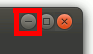 The first round button at the right end of the window's title bar can be used to minimize the window. Clicking the window's button on the task bar at the bottom of the screen will make the window visible again restoring the window to its last position on the computer screen. See Restore.
- Misinformation See Hoax Emails.
- Mode Bar (Adapt It) is located directly under the tool bar. Adapt It's mode bar has controls that can change the way Adapt It operates. These controls include Drafting and Reviewing radio buttons, Automatic, Save to Knowledge Base, and Force Choice For This Item check boxes, a <no adaptation> button, and a control that indicates whether any Delay has been set. The Mode Bar is displayed by default, but it can be hidden (or made visible again) if desired by selecting View > Mode Bar.
- Monitor is the term used for an external computer screen. Monitors are commonly used as a component of a desktop computer system. See Screen.
- Mouse A mouse is a convenient pointing device that can be used with desktop and laptop computers. A modern computer mouse has a laser light that shines on a surface such as a mouse pad or table top, and communicates with the computer using a wireless USB receiver that plugs into one of the computer's USB ports. The user can move the mouse to make the screen's cursor (or pointer) move and point at various things on the computer screen. A mouse (or trackpad) usually has two buttons that can be used to "click" or "right-click" on items on the computer's screen. See Double-click. A mouse also usually has a wheel which can be used to scroll a list or text in a window that has scroll bars.
- Move (file) Sometimes it is helpful to move a file from one folder or location on a computer to a different location or folder, or even to an external USB drive. When a file is moved, no copy is left of that file in its original location. A File Manager can be used to move a file. You should take great care when moving a file, and be sure that the file is not needed or expected to be in that location by a software program. See Drag and Drop.
- Move (text) Sometimes it is helpful to move some text from one part of a text document to another location within that text document. Text can be moved by selecting the text to be moved, then doing Edit > Cut, and then placing the insertion point at the location you want the text to be moved to, and then selecting Edit > Paste. In programs like Paratext and LibreOffice Writer, it is possible to move selected text by using the drag and drop technique. See Drag and Drop.
- Move (a window) Sometimes you may want to move a window frame on your screen to make other windows more visible. If a window is not maximized (taking up the entire screen), it can be moved by clicking and holding the window's title bar (at the top of the window) to "grab" the window, and moving the mouse pointer - which will move the window. If the window is too big to see or access the buttons at the bottom of the window, you can hold the Alt key down and drag the window (holding the mouse's left key down) against any part of the window. See Resize (a window). See Maximize (a window). See Minimize (a window).
- MS (milliseconds) A millisecond (MS, ms or msec) is one thousandth of a second and is commonly used in measuring the time a computer takes to complete an operation such as the time to read to or write from a hard disk or the time it takes a packet of information to travel on the Internet.
- Myths. See Hoax Emails.
- Netbook (hardware) is a computer that is similar to a laptop computer, but is smaller with a more limited screen size and keyboard, and a less powerful processor.
- Network See LAN (Local Area Network).
- NTFS (Nes Technology File System) is a file system developed by Microsoft and commonly used on newer computers running the Microsoft Windows operating system.
- ODT (file extension) used as the default document format and the file name extension for documents created in the LibreOffice Writer program.
- Open (a window, a file, a folder, etc) Many software programs including Adapt It and LibreOffice Writer have an Open command on their File menu. Paratext has an Open Project/Resource command on its File menu and has a number of other Open commands. You may use similar Open commands on the File menu of a File Browser to open a folder or open the program that is associated with a file. Within the File Browser program you may also double-click on a folder or file to Open it.
- Open Source (software) The source code that is used to develop computer programs may be closed source or open source. Some companies like Microsoft and Apple keep the source code they use to create their software programs "closed" or "proprietary", in order to restrict the use of their software so they can sell it for great profit. Other companies and software developers design and develop open source software which is free and designed to be given away and used for the benefit of its users rather than to make a profit. See Free Software.
- Operating System All computers and computing devices have an operating system that controls the basic functions of the computer or computing device. The most widely used operating systems in use today are: Microsoft Windows, Apple OS X, Apple IOS, Linux and Android (which uses the Linux Kernel). The Microsoft and Apple operating systems cost money and have restrictive licenses. The Linux and Android operating systems are mostly open source and free of cost and are licensed to encourage sharing.
- Options Many programs have Options or Settings that can be set or changed by the user. Within Adapt It most options are found on tabs in the Edit > Preferences menu.
- Orthography is an alphabet for a language. It is a standardized system for using a particular writing system (script) to write a particular language. It includes rules of spelling. Other elements of written language that are part of its orthography include hyphenation, capitalization, word breaks, emphasis, and punctuation.
- Others (permissions) Linux operating systems allow certain permissions to be granted to the "owner", to the "group", and to "others" with respect to the files and folders in the computer. The others are distinct and have certain permissions that are distinct from the owner and from the group. See User (Permissions).
- Owner (permissions) Linux operating systems allow certain permissions to be granted to the "owner", to the "group", and to "others" with respect to the files and folders in the computer. The owner is distinct and has certain permissions that are distinct from the group and from the others. You are the "owner" of all files and folders in your Home folder. See User (Permissions).
- Panel is another name for the task bar located at the bottom of the screen in Linux Mint. See Task Bar.
- Paratext is a software program that is designed as a comprehensive editor for Bible Scripture books. Paratext was originally created by the United Bible Societies (UBS). It is currently being jointly developed by UBS and SIL. Paratext (and Adapt It) both know about the USFM marking system for marking the parts of Biblical texts. Paratext has many features that can help you to revise, check and polish your translation. Adapt It can collaborate with Paratext making it easy to adapt your initial drafts of Scripture in Adapt It and have the resulting drafts of your translation transferred automatically to Paratext where they can then be revised, checked and polished until they are ready for publishing. See Collaboration Between Adapt It and Paratext.
- Password is a secret code that you must type to log in to your computer and to access some functions of your computer - such as when you want to install new software. Some programs such as Adapt It also require a password to access administrator functions and settings. Passwords help to keep your data safe and secure.
- Paste (files or text) The Edit menu of many programs have a Paste menu item. Paste can be used after and Edit > Copy or Edit > Cut operation. Within a text window or text box, the insertion point must be placed into the text before a Paste can be done, pasting the copied (or cut) text at the location of the insertion point. Within the File Browser, one or more folders or files can be pasted into a selected folder - if you previously selected the folder(s) or file(s) and did an Edit > Copy or Edit > Cut operation.
- Path is a road map that a computer can understand to locate a folder or a file. The parts of a path on a Linux computer are separated by the slash character / which is located in the lower right part of the keyboard. For example, the path to your Documents folder is /home/<user>/Documents where <user> is the short user name of your user account on your computer. For example, if your user name is manus-jaha1 then the path to your Documents folder is /home/manus-jaha1/Documents. You can see the path road map to a file or folder within your File Browser. With the folder open where a file or folder is located that you want to know its path, select View > Location, and the path to the open folder will appear in the Location box near the top of the File Browser. See Directory. See Folder. See File.
- Permissions Permission settings are used to allow or deny access to each file or folder (directory) along with what a user, group and others can and cannot do with each one. Permissions apply to specific files and directories (or folders), and can be set differently for users, groups and others.
- Phrase box (Adapt It) is a movable edit box that is used in Adapt It to enter your translations of source text words and phrases. 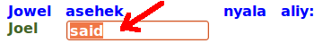When you have finished typing your translation in the phrase box at its current location and press the Enter key, the phrase box moves to the next empty location (called a "hole") in the target text line. You can also move the phrase box manually by clicking the mouse pointer elsewhere in a target text line - either at a point in the target text where no translation exists yet, or at a point in the target text where a translation already exists, in order to edit or change that translation.
- Phrase (Adapt It) is one or more words, of source text, that can be translated by one or more meaningful words (also a phrase) in the target language. Translation within Adapt It is done by typing one or more words into the phrase box as it moves along the target text line. See Phrase box.
- Pile (Adapt It) is a vertical stack of text elements that represents a translation element or storage element. Hence, a Pile is composed of a source text word or phrase, grouped together with a target text word or phrase, and optionally a glossing word or phrase. Each Strip across the Adapt It main window is composed of such Piles. See Strip.
- PgU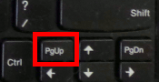p (key) is located at the lower right part of the keyboard. PgUp stands for "Page Up". The PgUp key can be used to scroll toward the top of a text file or other scrolling window.
- PgDn (key) is located at the lower right part of the keyboard. P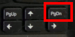gDn stands for "Page Down". The PgDn key can be used to scroll toward the bottom of a text file or other scrolling window.
- Placeholder (Adapt It) Sometimes you may need to insert some extra target text in the translation, but there is no suitable source text to "hang" it from. A placeholder (consisting of an ellipsis of three dots, ...) can be inserted in the source text to make a place for extra words that are needed to make a good translation in the target text. You can use the special tool bar buttons to insert or remove a placeholder. There is also an ALT + Down Arrow keyboard short cut for inserting a placeholder, that is, hold down the ALT key and press the Down Arrow key. If you have a selection somewhere, the placeholder will be inserted immediately before the first selected storage element, regardless of where the phrase box is, otherwise it will be put immediately before the phrase box location. To insert AFTER these locations, the short cut is either CTRL + Down Arrow, or CTRL + ALT + Down Arrow.
- Plain Text is text that is composed entirely of plain characters, without any special (binary code) formatting added to enhance the appearance of the text. Plain text is the normal format for files created by the Gedit editor. If a text is created within Word or LibreOffice Writer, it needs to be saved explicitly as "Plain Text" in order to ensure that the file produced will be a plain text file. Scripture files that are marked with USFM markers are also considered plain text files. See also USFM.
- Pointing Stick is found on some Lenovo "Thinkpad" computers between the G, H and B keys. The pointing stick can be used to move the screen cursor with gentle pressure of the index finger of the right hand.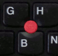 Some people find this more convenient that using the trackpad or a computer mouse because it can be used without removing one hand from the keyboard. With practice it becomes easy to position the screen cursor and use your thumb to click the left trackpad button just as one would use a mouse and its left button.
- POP3 Post Office Protocol 3 is one of the standard protocols for receiving email. POP3 is a client/server protocol in which email is downloaded to your computer and subsequently deleted from your Internet server.
- Print is an operation that can be done to an external printer in order to have a paper copy of file that is stored on the computer.
- Print Preview is the display on the computer screen of what would be printed if that same data were sent to an external printer. Print Preview can be helpful to determine the number of pages a print out will take, or what page to select and send to a printer in cases where only a portion of a text needs to be printed.
- Program or Computer Program is software that enables the computer user to interact with the computer and do work on the computer. Linux Mint itself is a program that assists the user in accessing many other computer programs. See Software. See Open Source. See Source (code).
- Programmer / Programming / Programming Language A programmer is one who creates computer programs. The process of creating a computer program is programming. The main tool a programmer uses to create computer programs is a programming language. See Source (code).
- Project In Adapt It, a Project is a pair of languages consisting of a source language and a target language. The user working in that project adapts from the source language text into the target language text, and Adapt It stores composite documents which represent an interlinear form of the document and builds a knowledge base of words and phrases and how they relate the two languages together. In Paratext, a Project represents a single language. The user working in a Paratext project revises and polishes the Scripture texts stored within that single-language Project. Adapt It can be set up (by an administrator) to automatically obtain its source texts from one Paratext project, and store the target text it produces through the adaptation process back into a different Paratext project. See Collaboration Between Adapt It and Paratext.
- Proprietary (software) or closed source software is computer software licensed under exclusive legal right of the copyright holder with the intent that the licensee is given the right to use the software only under certain conditions, and restricted from other uses, such as modification, sharing, studying, redistribution, or reverse engineering. The Windows operating system and many other Windows software programs are proprietary software. In contrast, free and open source software is licensed by the owner under more permissive terms. Linux Mint and most of the software that comes with Linux Mint is free and open source. See Open Source.
- PrtSc (key) On a Lenovo laptop the PrtSc key is located on the lower right part of the keyboard. The PrtSc key is a short name for "Print Screen". The name is a little misleading, however, since that key on modern computers doesn't print anything, but actually takes a "picture" of what is currently on your computer screen and stores that picture image in your Pictures folder with a name like "Screenshot from 2013-05-27 08:36:54.png" which includes in its file name the date and time the PtrSc key was pressed to take the picture. 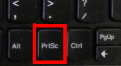The type of image is a .png file. You can view the image by double clicking on the Screenshot from... file name. The image can be edited using the Gimp Image Editor (Menu > Graphics > Gimp Image Editor). If you want to take a picture of just a single window appearing on your screen (instead of the whole screen), you can make sure that window is the window in focus, and then hold down the Alt key while pressing the PrtSc key. The image saved in the Screenshot file will be of that focused window only - not the entire screen. On some computer keyboards the PrtSc key is located at the top right part of the keyboard. See Focus.
- Quit See Exit.
- RAM See Memory or RAM memory.
- Read Only (file property) Some files are set to a read only state or property. When a file is read only it cannot be changed, unless its properties are changed to read and write. See File Properties.
- Registration (Paratext) Paratext was designed for exclusive use by Bible translators and their advisors and consultants. The reason for this restriction is because Paratext includes access to some Bible resources and texts whose copyright owners do not allow the free distribution of those resources and text, but allow Bible translation workers to use them if they agree to not give them away. Therefore, to use Paratext the user must request a registration and agree to its license terms which restrict you from giving copies of Paratext and its resources to someone not involved in Bible translation work. The Paratext program will not work unless your registration data has been entered into the Paratext program (Tools > Registration Information...). Note: For Manus translators, Bill Martin has requested registrations for each worker and has entered that registration data into their computers.
- Reboot See Restart
- Resize (a window) The frames of many windows on your computer can be resized to make the text or data within those windows more visible - or to make multiple windows on your desktop fit better on the screen. To resize a window you can move the mouse pointer to the edge or to the corner of the window until the mouse pointer changes to indicate that the point is at the border (or corner) of the window - the position that can be used to resize the window. Hold the left mouse down and drag the window's border in the direction you want to change its size. Dragging the top, bottom or sides of a window frame will only change the window's height or width. Dragging at one of the corners of the window frame will change both the window's width and height at the same time. It takes a bit of practice to gain skill in resizing windows. See Move (a window). See Maximize (a window). See Minimize (a window).
- Restart Sometimes you may want to restart your computer. A restart might be necessary if the computer is not performing as expected or if a program running on the computer has crashed and made the computer unresponsive (hung up). If the computer is not hung up, you can select Menu > Quit (the red button at bottom left of the main menu), and then select the "Restart" button. The computer will shut down and then automatically boot up again. If the computer is hung up and nothing you do can make the computer respond, you can try briefly pressing the power button above the keyboard. That may cause the shut down dialog to appear and you may be able to Restart from there. If the shut down dialog does not appear, the last resort is to press and hold down the power button for a few seconds until the computer turns off. Remember that computers are complex machines and software programs are also highly complex and can sometimes have "bugs" that have not been discovered or fixed. Therefore, on rare occasions your computer may not always work perfectly all the time. In such cases doing a restart can sometimes fix the problem. See Error. See Crash.
- Restore (a window) is returning a window to its former size and location after minimizing or maximizing the window. See Minimize (a window). See Maximize (a window).
- Restore (a file or folder) is to replace a bad or missing file or folder from a backup copy. Sometimes you may accidentally delete a file or a folder. The first place to look for an accidentally deleted file or folder is the computer's Trash folder. You can see the contents of the Trash folder by selecting the Trash icon in the left side of the File Browser. If the accidentally deleted file or folder is there you can select it and click on the "Restore Selected Items" button, which will move the selected file(s) or folder(s) back to their original location. If you want to restore a file from a backup copy, you will need to click on the launch bar item labeled "Backup my data to USB Backup" (or double-click its desktop icon), and do the Restore operation from that Backup program. See Backup.
- Retranslation (in Adapt It) is making a new translation of part of the source text, instead of adapting that part of the source text. Sometimes on rare occasions, you may feel that the original source text is not as well-translated (from original sources) as you would like, so that rather than adapting that section of source text, you would prefer to retranslate it so it has a different meaning. Adapt It has tool bar buttons that allow the user to "Do a Retranslation, Edit a Retranslation, and Remove a Retranslation. To do a retranslation, you must first select the source text that you want to be included in the retranslation, then click on the "Do a Retranslation" tool bar icon. The retranslation is marked in a different color and is signaled by asterisks (*) above all the words (and placeholders if necessary) of the source text that makes up the retranslation. To edit or delete a retranslation you simply need to click on any word within an existing retranslation and click the appropriate button on the tool bar. Note: The Make a Phrase operation of Adapt It is limited to 10 words or less. Hence, if while adapting, you need to make a phrase of more than 10 words of source text, Adapt It will consider that phrase to be a retranslation rather than a regular adaptation. Retranslations are not stored in the knowledge base. See Translation. See Adapt, Adapting, Adaptation.
- RightArrow (key) is located near the lower right part of the keyboard. It can be used to move the insertion point to the right while editing text in a text wi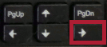ndow or a multi-line edit box. The RightArrow key can also be used along with the Alt key within Adapt It. Alt+RightArrow can be used to select source text words above and to the right of the phrase box in order to make a phrase with those source text words.
- Right-click (with a mouse or trackpad) is See Click.
- Role or Roles (in Paratext) Translation programs should normally have people who do certain roles within or for that translation program. For example, there will need to be a Translator and eventually a Consultant or Reviewer that advises and checks the translation. There also is an Administrator (which may be the same as the Translator). There may also be one or more Observers. These are the roles that are recognized by the Paratext program, and these roles can be assigned to Paratext users by using the Paratext menu item at: Project > Users, Roles, and Permissions... .
- Root The Root is also the "Superuser" or "Administrator" or simply " / ". The person who has access to root is the most powerful user on a Linux system and has privileges to change everything on the Linux computer.
- Router is a hardware device that directs the traffic on a network from one path to another. It basically like a police officer directing traffic.
- RTF (file extension) RTF is an abbreviation for Rich Text Format. Files is RTF format have the .rtf file extension. RTF is a file format that preserves the enhanced formatting of documents when they are read opened on computers with different operating systems.
- Rumors See Hoax Emails.
- Samba A sharing service for Linux that allows both Linux and Windows machines to share files with each other.
- Save is the process of writing the information or data from a computer program out to a file on a disk. Each time a save operation is done the file is updated overwriting the previously saved information or data. It is good practice to save your work often. Most programs have a Save item on their File menu. You can also save your work using a Ctrl+S key short cut (Press the S key while holding the Ctrl key down). If a program experiences a "crash" (quits suddenly while you are working) some information or data may not be saved since your last save operation. Some programs like Adapt It and LibreOffice Writer will auto-save your work every 10 or 15 minutes unless you do a save operation more often. Paratext has an auto-saving feature that will save your work when you change to a different book or chapter. You can turn auto-save on by ticking a check box in the Paratext menu: Tools > Options.
- Save As Some programs including Adapt It and LibreOffice Writer allow you to save the information or data they have loaded in the program, to a file using a different format or a different name. The menu item to do this special kind of saving is called Save As... and is located on the File menu. The Save As dialog has a dropdown list where you can change the format if needed.
- Screen is the part of a computer that displays the information and the computer's graphical user interface to the user. See Graphical User Interface or GUI. See Backlight. See Screen Resolution.
- Screen Resolution is the number of dots of light (called pixels) that the computer screen can display. The Lenovo x130e and x131e laptops have screens that have 1366 pixels of light horizontally, and 768 pixes of light vertically. Hence, they have a total of 1,049,088 pixels of light. The computer controls each dot of light to form text and images on the screen as well as the colours you see on the screen. The smaller netbook computers usually have 1024 pixels in width and only 600 pixels in height. Desktop monitors may have 1900 pixels in width and 1200 pixels in height, or more. For many computers, there are about 100 pixels per inch across their screens. Screens with higher resolution can display more information on the screen at the same time, but if the physical size of the high resolution screen is not very big, the information displayed will look sharper but smaller.
- Script is a program or sequence of instructions that is interpreted or carried out by another program rather than by the computer processor itself directly. Linux computers often use scripts, but for people working in a graphical user interface like Linux Mint, they do not work directly with scripts.
- Scroll Bar is a narrow area of a window, usually on the right side or the bottom of the window. The scroll bar appears on windows which have more information than can fit vertically or horizontally within the window. The scroll bar allows the user to move the content of the window up or down in order to see all of the window's content. The mouse pointer can be used to scroll the window by clicking on parts of the scroll bar, or by dragging the scroll thumb (or scroll car) up or down within the scroll bar. See Scroll Thumb or Scroll Car. When a scrollable window is in focus, the mouse pointer can be positioned over the window and the mouse wheel can be used to scroll the window. Alternately, a scrollable window in focus can be scrolled using the arrow keys and/or the PgUp and PgDn keys.
- Scroll Thumb or Scroll Car is part of a scroll bar (see Scroll Bar). The scroll thumb/car can be pulled up or down with the mouse pointer to scroll the window. Pull the thumb/car down to bring the area below the bottom of the window into view. Pull the thumb/car up to bring the area above the top of the window into view.
- SD or SDHC card is storage device that fits into a card slot found in many laptop computers. When an SD or SDHC card is inserted into the computer, it becomes another storage "disk" in the same way that a USB drive does.
- Secure (SSL) connection is when your computer is sending messages or data to another computer in an encrypted or coded form that other people cannot read or access. Usually the sending computer codes or encrypts the data and the data is not unencrypted until it reaches the receiving computer.
- Select or Selection is marking something on the computer screen so that you can tell the computer to do something with what is selected. A selection changes colour from other items that are not selected. Usually you select a menu item by clicking on it with a mouse. You can select text by dragging the mouse over the text with the left mouse button held down. Sometimes you can use the keyboard to select things. For example, in Adapt It you can select source text words to the left or right of the phrase box by using the Alt+RightArrow or Alt+LeftArrow keys.
- Settings are decisions about how a computer program should operate. Settings are sometimes called options. A computer stores settings away in a place where it can find them each time it starts up. See Configuration File.
- Short cut is quick way to go from one place to another, or an easy way to accomplish a task. On computers, a short cut allows you to use the mouse or a key to do something in one step that might otherwise take several steps to accomplish. For example, the launch bar has icons that are short cuts to the programs they represent. A single click on the Adapt It program icon on the launch bar launches launches Adapt It, whereas launching Adapt It from the menu system takes several menu selections (Menu > Office > Adapt It) to launch that same program.
- Shift (key) is a large key
located on both sides of the keyboard.
You hold the Shift key down while typing upper-case letters. The
Shift key is also used to modify the action of other keys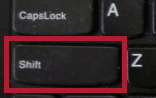.
For example, pressing the Tab key
move the insertion point
forward through the cells of a table. However, if you hold down the
Shift key while pressing the Tab key, it moves the insertion point
backwards through the cells of a table.
- Shut Down is the same as turning the computer off. You can shut down the computer by clicking on the red icon labeled "Quit" on the Menu, and then clicking the "Shut Down" button when the computer asks "Shut down this system now?"
- Signal and Signal Strength are terms that describe a wireless network and how strong the network's signal is. If the signal is too weak the computer may not be able to connect to the device sending the signal, or the connection speed may slow down. See Wireless.
- Skype is a program that can be used to allow people to talk with and even see each other across the Internet. Skype needs a good Internet connection to work well for both sound and video communication.
- Sleep (mode) is when a computer turns off some of its parts - such as the screen and hard drive - but keeps power going to its RAM memory, so that the running programs and information in RAM memory do not disappear, as they would if the computer is completely shut down. Sleep mode is also called "Suspend" mode. Many laptop computers will go into sleep mode if you close the screen, and awaken when the screen is opened again. The computer can wake up faster from sleep mode than from powering up from a complete shutdown. When you won't be doing work for a while, it is best to shut down the computer rather than putting it into sleep mode since sleep mode still drains power from the battery.
- Software is the set of instructions making up a computer program. It is software that directs the computer hardware to do its work. Software cannot do anything without appropriate hardware that the software can run on. Both software and hardware are needed for computers to be useful for doing work.
- Software Updates See Updates or Software Updates.
- Source (code) The set of human-readable instructions that are used to build a software program. Computer programmers write source code and use that code to create the software instructions that run on computers and enable them to do useful work. The source code that is used to develop computer programs may be closed source or open source. Some companies like Microsoft and Apple keep the source code they use to create their software programs "closed" or "proprietary", in order to restrict the use of their software which they sell for profit. Other companies and software developers design and develop open source software which is free and designed to be given away and used for the benefit of its users rather than to make a profit. See Open Source.
- Source Text (Adapt It) is the language text from which you are doing adaptation work in Adapt It. See Target Text.
- Space Bar The Space bar is the long key located at the bottom middle part of the keyboard.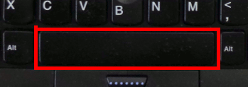 It is used to add a space character when typing text. If you are using good typing position of your hands, you will use your thumb to press the space bar.
- SPAM, Junk Email, Unsolicited
Bulk Email is an email message that
is sent out (in bulk) by people or organizations ("spammers")
to many email users. Spam email attempts to get a computer user to
respond to the email in a way that will only benefit the spammer, and
often be harmful to the user or the user's pocketbook. Spam relies on
deception, emotional stories, or outright lies to trick people into
responding to the email by replying to the email or by clicking on a
link within the email message. The link within spam email messages
usually takes the user to a web
site that the spammer designed to look genuine (like a
familiar bank or store's web site) but is in reality just a deception
(called "phishing" web site), designed to get the user to
give away his identity or sensitive information such as passwords.
The spammers can then use that information to steal from people, or
even break in to the user's computer and control it, often using your
computer as a bot or robot to send spam to other people - often to
people on your own email address list. Spammers use computers to
collect email addresses from chatrooms, web sites, customer lists,
newsgroups, and viruses which harvest
users' address books, and are sold to other spammers. Email spam is a
big problem and more than 85% of all email messages are some kind of
spam. See also Hoax Emails.
- Spyware or Adware Spyware is a computer program that has been created by someone (often with evil intent) in order to steal information such as passwords or bank account numbers from unsuspecting computer users. Spyware may send the information it gathers secretly to someone else, so that they can take control over a computer without the user's knowledge. Adware is similar to spyware. Adware is a software program that automatically displays advertisements in order to try to win money for the author of the program. Some adware watches and analyzes which Internet sites the user visits in order to show advertising about certain types of goods or services. Adware often displays unwanted advertisements.
- Status Bar is strip of information located at the bottom frame of many programs and windows. A status bar is sometimes divided into sections, each of which shows different information. A status bar may tell the user what the program is doing, or it may display some current settings, or help some messages depending on what the user is doing in the window.
- Strip (Adapt It) is a horizontal line of texts that go together. A strip is made up of a line of source text that is aligned with its target text adaptations directly below the source text. Most strips span the width of the Adapt It window. A strip may also display a line of glosses or free translations below the source text. A strip may also have some navigation text above the source text line that shows where chapter numbers, verse numbers, paragraphs, section headings, and other information begin in the text.
- Superuser see Root.
- Suspend See Sleep (mode)
- Swap or Swap File is a space on a hard disk that may be used to store part of the computer's memory (RAM) at times when the computer needs to handle more information that can fit into its memory at one time. Having a swap file allows your computer's operating system to pretend that you have more RAM than you actually do.
- Tab (key) is located on the left side of the keyboard. The tab key does different things depending on what program is running and what part of the that program's window is in focus (see Focus). 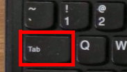If an editor program is running in a window, and the insertion point has been placed within the text at the beginning of a line or paragraph, the Tab key can be used to insert space to make the first line of the paragraph indented. Within Adapt It, and when the focus is within the phrase box, the Tab key works just like the Enter key (See Enter key). Within dialogs the Tab key can be used to move the focus to different items or buttons in the dialog.
- Tab (in window or dialog) A "Tab" (usually at the top) within a window has a word or short phrase on that tab to indicate what that tab will show if you click on the tab. Such tabs are helpful when more than one window or view are stacked on top of each other. You can click on a particular tab to view that tab's window content in the main window. For example, Firefox uses tabs for different web pages or web sites that are open at the same time. You can click on a particular tab to view the web page loaded into that tab. Dialogs that have many settings sometimes use tabs to group related settings together. For example, the Preferences dialog within Adapt It has several tabs for the different kinds of settings that a user can make within the Adapt It program. Another example would be the Gedit editor. It uses tabs when more than one text file is open in the editor at the same time, allowing the user to click on the tab representing the document he wishes to view and/or edit.
- Tablet (computer) is very compact computer that consists mainly of a touch screen with a few buttons or ports along the side(s) of the tablet. Tablets do not have a physical keyboard like laptop and desktop computers have. Instead, if a user needs to type something, a virtual keyboard appears on the screen and the user touches the "keys" that appear on the screen to type information into the computer. Tablet computers are relatively new, but they are becoming very popular especially for reading and viewing text and videos. Generally for major word and text processing tasks like those involved in Bible translation work, a laptop (or desktop) computer with a real keyboard is preferable. Even so, there are efforts under way to provide Bible translation software such as Adapt It that can be used on a tablet computer, or even on a smart phone.
- Tar is a Linux program that is commonly used to collect many files into one larger file for distribution or archiving, while preserving file system information such as user and group permissions, dates, and directory structures. The Tar program produces tar files.
- Target Text (Adapt It) is the translated (adapted) language text that is being created within Adapt It. Adapt It automatically lines up the target text under the source text and keeps them aligned.
- TCP Transmission Control Protocol is a set of rules (called a protocol) used along with the Internet Protocol (IP) to send data in the form of message units between computers over the Internet.
- TCP/IP Transmission Control Protocol/Internet Protocol is the basic communication language or protocol of the Internet. It can also be used as a communications protocol in a private network (either an intranet or an extranet).
- Terabyte (TB) is is a measure of computer storage capacity and is 2 to the 40th power or approximately a thousand billion bytes (that is, a thousand gigabytes). It is common for desktop computers to have a hard drive that can store a Terabyte of text or data.
- Task Bar is the thin horizontal area at the bottom of the computer's screen in Linux Mint. It is also known as the panel. The task bar may have many buttons on it. You can hover the mouse pointer over each button to get an idea of what the task bar button represents. The task bar has the main "Menu" button at the left end of the panel. Next to the Menu button is a "Show Desktop" button. Next to that is the part of the task bar that functions as the program launcher - which has a number of icons for commonly used programs. Then the middle part of the task bar shows buttons for running software programs or windows that are currently open. At the right end of the task bar are a number of icons and segments of the bar that indicate the status of things like removable drives, network connections, speaker volume, battery charge, update manager, and the current date and time. See Panel.
- Text or Text File is composed of characters, such as those you can type on the keyboard, that represent a written language.
- Thunderbird is the name of a popular software program that is used to create, send and receive email.
- Title Bar is the top part of a window frame. The title bar often contains the name of the program running in the window frame, and may also display the name of a file that is open within the program's window. A title bar also usually has buttons that can be used to minimize, maximize, restore the window to its former size, or close the window.
- Tool Bar is the part of a program window that has icons, buttons or other controls that can be used to do things within the program. The tool bar is usually located directly under the menu bar at the top of the program's window.
- Touchpad or Trackpad is a rectangular area in the lower middle part of a laptop computer just below the keyboard. You can use the touchpad to control the movement of the mouse pointer by moving your finger(s) over the surface of the touchpad. The touchpad also has buttons that act like the left and right buttons of a computer mouse.
- Translation is the communication of the meaning of a source-language text by means of an equivalent target-language text. See Adapt, Adapting, Adaptation.
- Trash is a special folder on a computer which temporarily holds files or folders that you delete from the computer. Deleted files and folders remain in the trash folder until you "empty" the trash or until the computer empties the trash when it needs to recover the space used by the deleted files and folders. The trash folder is listed in the left pane of the File Manager. Click on the trash folder to see what files and folders are currently in the trash folder.
- Trojans or Trojan Horse A trojan horse is a deceitful software program that appears to serve a useful function but carries a virus or worm that infects you computer. Trojans often have a "back door" that allows someone to gain access to your computer secretly. Trojan horses may steal information, or harm their host computer systems. These usually come from downloading software from the Internet. See Virus. See Worm.
- TXT (file extension) TXT is short for TEXT which is made of characters, numbers and symbols that are commonly used on computer keyboards. See Text or Text File.
- User Interface or UI. See Graphical User Interface (GUI).
- Urban Legends See Hoax Emails.
- Ultrabook is a powerful, but very thin and light weight laptop-style computer. An Ultrabook usually has no CD/DVD drive to save space. It also usually has a solid state memory hard drive rather than one that has moving parts. Ultrabooks are designed for long battery life, and they are generally more expensive than other portable computers. See Laptop. See Tablet. See Desktop.
- UnZip or Uncompress Sometimes computer files are compressed to a smaller size to save space. One kind of compression is done by the zip program and the resulting compressed file is called a zip file. When files are zipped they take up less space, but no data is lost when they are unzipped. Usually, before you can use compressed or zipped files, they need to be uncompressed or unzipped. Another common type of compressed file on Linux computers is done by the gzip program and the resulting compressed file is called a gz file.
- Unicode is a standard and consistent way of representing text that can be used for most of the world's languages and writing systems. The latest version of Unicode contains more than 110,000 characters covering 100 scripts. In Linux Mint the data you create and store using Adapt It, Paratext, LibreOffice Writer, and other Linux programs is all in Unicode.
- Unix is an operating system that originated at Bell Labs in 1969 as an interactive time-sharing system. Ken Thompson and Dennis Ritchie are considered the inventors of Unix. In 1974, Unix became the first operating system written in the C computer language and open source. Linux is an operating system that Linus Torvalds created modeled after the older Unix operating system.
- Unmake a Phrase (in Adapt It) is a common action that is done while adapting text within Adapt It. You may decide that a previously made source phrase was not a good grouping of source words to translate, or that a different grouping of words should be made, and you need to unmake the existing phrase of source words. To unmake a phrase the user first selects the source text words making up the phrase using the keyboard or the mouse (or places the phrase box directly under the previously made source text phrase), then clicks on the "Unmake a Phrase" button on the Adapt It Tool Bar. Adapt It automatically separates the words making up the phrase into separate words again - as they were before they were made into a phrase - including any previously done adaptations of the individual words. There is a keyboard short cut for unmaking a phrase, which is Alt+Delete, that is, hold down the Alt key and press the delete key. If the source phrase being unmade was selected at a location away from the current location of the phrase box, then the unmaking is done at the selection location, and the phrase box will then be placed at the first of the unmade words.
- UpArrow (key) is located near the lower right part of the keyboard. This key can be used when the insertion point has been placed within a text window or edit box (in Paratext or LibreOffice Writer) to move the insertion point up in the text.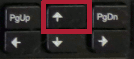 The UpArrow also has other uses within Adapt It. When there is no insertion point in the phrase box, the UpArrow can be used to scroll up in the document showing in the main window. The UpArrow also has another use when used with the Alt key. When a selection is current, Alt+UpArrow causes the Retranslation dialog to open for the selected text, but if no selection is current, the Retranslation dialog opens just on the text in the storage element at the current phrase box location.
- Updates or Software Updates The software used on computers eventually gets out-of-date, or needs new features, or sometimes software errors (or "bugs") are found that need fixing. For these reasons, the programmers who created the software may issue software updates which are stored at locations on the Internet (or on private servers) known as software repositories. Your Linux Mint computer generally knows where those software repositories are, and has an icon in the panel (next to the date -time display) that you can click on to check for, and install, any updates that might be available. Note: To get software updates requires that your computer has access to a network (such as the private Ukarumpa network), or to the Internet, in order to download the software updates. You may have to spend money for any Internet connection time and data that is required to get software updates.
- URL is an abbreviation for Uniform Resource Locator. A URL is the address of a file (resource) on your own computer, or a web site out on the Internet. You can type a URL into the address box near the top of your web browser. There are different kinds of addresses. Common Internet web addresses begin with http:// or https:// and are followed by the web address. For example the URL of the SIL International web site on the Internet is: http://www.sil.org. Most browsers like Firefox allow you to just enter the web address without the http:// part, for example, the SIL International web site can be entered as www.sil.org in the address box. Web browsers usually remember previous URL addresses you have entered in the address box, and they may automatically fill in part of an address that you have typed previously, saving you some typing effort. There are more than a trillion URLs that make up the World Wide Web part of the Internet. See Web site, Web, World Wide Web (www).
- USB is an abbreviation for Universal Serial Bus. A USB is a connector or socket on a computer that allows you to connect (with a USB cable or connector) to other devices such as USB memory sticks, cameras, CD/DVD players, keyboards, cell phones, scanners, and printers. If the device you are connecting via USB cable has a file storage area, it will be listed under the "Devices" heading in the left panel of the File Manager.
- USB Drive or Thumb Drive is a file storage device that can be inserted into a USB connector on your computer. When connected the name or "label" of the drive will be listed as an external hard drive under the "Devices" heading in the left panel of the File Manager. To view the contents of the drive click on its name or label. The contents will appear in the right side of your File Manager.
- User (permissions) Linux operating systems allow certain permissions to be granted to the "owner", to the "group", and to "others" with respect to the files and folders in the computer. Each is distinct and has certain permissions that are distinct from the other permission categories. You are the "owner" of all files and folders in your Home folder. See Owner. See Group. See Others.
- User or Username is the name created for you to use when you log in to the computer. It is the name that is associated with your Home folder. A computer can be set up for other users which would each have their own user name that they use to log in to the computer. The Home folder for each user is separate from all other users; one user cannot see or access a different user's files or data.
- USFM (Uniform Standard Format Markers) is a method of
marking the parts of Scripture files.
USFM markers start with a backslash
character which is directly followed by one or more code letters.
Some USFM markers a also followed by a space and a number; or a space
and some special text. Some common USFM markers are:
\v n
marks the start of a verse, where n is a number that indicates
the verse number
\c n marks the start of a chapter, where n
is a number that indicates the chapter number
\s text marks
the location of a sub heading, where text is the wording of
the subheading
\f text... \f* marks the start and end of
footnote text, where text... is the content of the
footnote
Some markers (like \c and \s above) indicate the presence
of a new paragraph or break in the Scripture text. Other markers
(like \v and \f ... \f*) may be found embedded within the Scripture
text. Footnotes and other "embedded" markers have a
beginning marker and an end marker that always ends with an asterisk
*. For example, the begin footnote marker is \f and the
end footnote marker is \f*. There are many other USFM
markers for marking the other parts of Scripture texts. USFM is the
standard marking system that is used in Paratext,
Adapt It, and some other software used
for translation and linguistics.
Scripture files that are marked with USFM markers are a kind of plain
text file. See Plain Text.
- View In a computer interface, a "view" is what you see through a "window" - a rectangular part of the screen through which a user can see some information or image. Many computer programs have a View menu that allows you to change some aspects of the "view" you see within the computer program. A View menu may also allow you to turn on or turn off certain parts of the program's interface, such as which tool bars are shown to the user. See Desktop (computer interface).
- Virus is a program written by someone with evil intent to take control of your computer for various purposes. A computer virus can destroy your computer's operating system, applications, data, files, or even remotely control your computer to harm other computers. Viruses usually attach themselves to computer program files. A computer may get a virus from a USB drive inserted into the computer, or from opening an email attachment, or from visiting a compromised web site that contains a virus. Computer viruses are an especially bad problem for computers that run the Windows operating system. Viruses are not a big problem for Linux computers. See AV or Anti-Virus. See Malware. See Worm.
- Warning is message that tells you about a condition or a result that might not be what you intend or want to happen. A computer program will usually give you a warning if you attempt to do something that the program thinks might be dangerous to your computer or to your data, or when your action might result in something happening that you don't expect. See Error.
- Web Browser is a computer program designed especially for loading and displaying web pages and web sites. Popular web browsers include Firefox, Internet Explorer (Windows), and Safari (Apple).
- Web site, Web, World Wide Web (www) These are words that describe the vast network of information that is available from computers, especially those connected to the Internet. Individual web sites usually consist of at least one and sometimes many "pages" of information that can be viewed from your computer when it "loads" the web site. Every "page" of information on the Internet has a unique address or URL. Many web sites have hyperlinks or jump links that can connect your browser to other web sites and pages on the Internet. You can use "search engines" such as Google, Bing and Yahoo to find information on the world wide web. See URL. See Hyperlink or Jump Link. See Internet.
- Window is the rectangular area of the screen that displays a "view" to the user. A window usually has a frame around the four borders of the window. The computer screen itself acts like a window that shows the computer's "desktop" and can contain other windows. Most computer programs run within a window on the computer screen. A computer window can contain the contents of a file, such as a text, a picture, or even other windows. Messages and dialogs display their information in windows. See Graphical User Interface or GUI.
- Wine is a Linux program that can run some Windows programs within a window on the Linux computer. The Wine program provides a way for Linux to execute Windows programs that normally only run on Windows computers. Wine does not require Microsoft Windows, but is a free open source program. Not all Windows programs can run within a Wine window on Linux. Generally it is best to run genuine Linux programs on Linux computers.
- Wireless was traditionally known as a radio, but in the modern computer age a wireless is a device that can use an electrical signal to transmit and receive information between computers and computer networks. Most laptop computers, tablet computers and cell phones have wireless transmitters and receivers that can be used to transfer information at high rates of speed. There are various hardware devices that can be used to send, receive and route wireless signals (called traffic), including modems, gateways, switches and routers.
- Worm is a type of computer malware that can infect and do harm to a computer's operating system or its data. A computer worm reproduces itself in order to spread to other computers. Often, a worm uses a computer network to spread itself, relying on security failures on the target computer to access it. Unlike a computer virus, a worm does not need to attach itself to an existing computer program. Worms almost always cause at least some harm to the computer network they infect, even if only by consuming space and keeping the network too busy, whereas viruses almost always corrupt or modify files on a targeted computer. A very common strategy of computer worms is to install a "backdoor" in an infected computer to secretly make the computer into a "zombie", that is, to make it obey the wishes of the creator of the worm. Networks of such infected machines are often referred to as "botnets" and are very commonly used by spam senders for sending junk email or by malicious hackers to attack business web sites and computer networks. See Virus. See Malware.
- XML (file type) is an abbreviation for Extensible Markup Language. XML is a type of code language that defines a set of rules for giving structure to documents. XML documents can be read by both humans and machines/computers.
- Yahoo! is a multinational Internet corporation. It is widely known for its web portal, search engine, and related services. See Google.
- ZIP is a method for compressing computer files to make them take up less space. The Zip program can be used to compress one or more files into a single file which is called an archive. When files are zipped they take up less space, but no data is lost when they are subsequently unzipped. Usually, before you can use zipped or archived files, they need to be uncompressed or unzipped. Another common type of compression program on Linux computers is gzip. The resulting file compressed by gzip is called a gz file. See File Properties. See Unzip or Uncompress.
- Zoom is a feature that is available in some computer programs. Zoom allow the user to make the content of a window larger or smaller. When you "zoom in" the objects or text within the window get larger, but less of the entire content of the window becomes visible. When you "zoom out" the objects or text within the window get smaller, but more of the content of the window becomes visible.